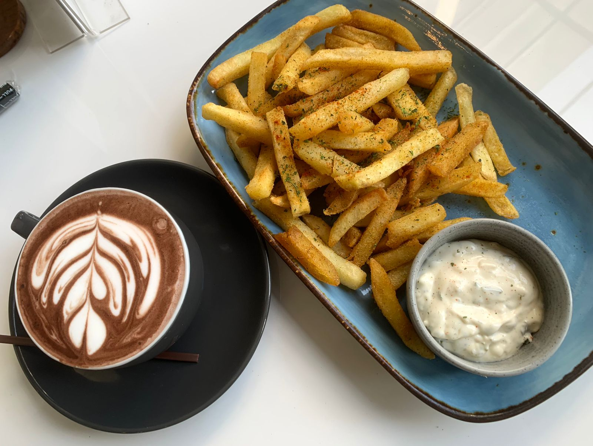

Hi! in this page I would like to share my experience from the semester break three months ago. Most of my time was spent at home by lounging, watching movies, playing games, scrolling through social media, and trying out new cooking recipes. It was actually quite boring, but knowing that the academic days would soon start again and that free time would be rare, I cherished every bit of my free time. Sometimes, I would visit shopping malls with my family to shop and eat.
The break I experienced was only one month long because, in June, I took summer classes, which turned out to be not as intense as the name suggests since I only took 7 credits and had plenty of time to relax. I took the weekend off, and on June 22nd, I decided to commit myself to baptism, which is the best decision for a Christian.
In short, the summer session ended with good grades. My family and I went to Cirebon for an Adventist Women's Service event (I was obviously forced to go), but at least I got to enjoy the trip with good food, visited scenic spots, and delicious chicken wings. The short one-week break after the summer session ended, and I returned to UNAI to type this text.
Don't follow your dreams, follow my instagram @graceunicea